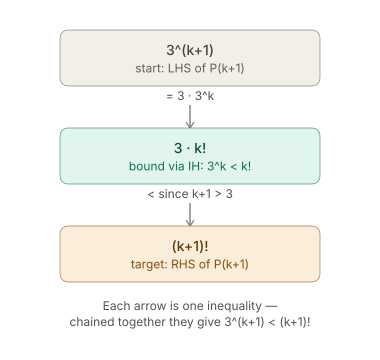

More Induction Proof Worked Examples
More Induction Proof Worked Examples
Example 1: bounded sequence \(a_n \leq 2\)
Statement
Let \(\{a_n\}\) be the sequence defined by \(a_1 = 1\) and \[a_{n+1} = \sqrt{2 + a_n}, \quad n \geq 1.\] Prove by induction that \(a_n \leq 2\) for all positive integers \(n\).
Setup
Let \(P(n)\) be the statement: \(a_n \leq 2\).
Base case
\(a_1 = 1\), and \(1 \leq 2\), so \(P(1)\) is true.
Inductive hypothesis
Assume \(P(k)\) holds, i.e. \(a_k \leq 2\).
Target
Show \(P(k+1)\), i.e. \(a_{k+1} \leq 2\).
Proof of target
Starting from the hypothesis: \[a_k \leq 2\]
Add \(2\) to both sides (to match the \(2 + a_k\) under the root in the recurrence): \[a_k + 2 \leq 4\]
Take the square root of both sides: \[\sqrt{2 + a_k} \leq \sqrt{4} = 2\]
But \(\sqrt{2 + a_k} = a_{k+1}\) by the recurrence, so: \[a_{k+1} \leq 2\]
This is exactly the target, so \(P(k+1)\) is true.
Conclusion
By induction, \(a_n \leq 2\) for all positive integers \(n\). \(\blacksquare\)
Method note
Identify the target (\(a_{k+1} \leq 2\)) right after stating the inductive hypothesis, before doing any algebra.
Then work forward from the hypothesis, applying only order-preserving operations (adding a constant, taking square roots of nonnegative quantities), steering the expression until it matches the shape needed to invoke the recurrence and land on the target.
Example 2: \(2^n < n!\) for \(n \geq 4\)
Note on factorials
\(n!\) means \(n \times (n-1) \times \cdots \times 2 \times 1\). By convention \(0! = 1\). E.g. \(4! = 24\), \(7! = 5040\).
Statement
Prove by induction that \(2^n < n!\) for \(n \geq 4\).
Setup
Let \(P(n)\) be the statement: \(2^n < n!\).
Base case
\(P(4)\): check \(2^4 < 4!\). \[16 < 24\] True, so \(P(4)\) holds.
Inductive hypothesis
Assume \(k \geq 4\) and \(P(k)\) holds, i.e. \(2^k < k!\).
Target
Show \(P(k+1)\), i.e. \(2^{k+1} < (k+1)!\).
Proof of target
Rewrite the left side of the target using exponent rules (always true, no inequality involved yet): \[2^{k+1} = 2 \times 2^k\]
Now bring in the hypothesis \(2^k < k!\). Multiply both sides by \(2\): \[2 \times 2^k < 2 \times k!\]
The left side is exactly \(2^{k+1}\) (from the rewrite above), so: \[2^{k+1} < 2(k!)\]
That's one link in the chain.
To reach the target we still need to connect \(2(k!)\) to \((k+1)!\). Write \((k+1)! = (k+1) \times k!\).
Since \(k \geq 4\), we have \(k + 1 \geq 5 > 2\), so: \[2(k!) < (k+1)(k!) = (k+1)!\]
Chaining the two links together: \[2^{k+1} < 2(k!) < (k+1)!\]
so \(2^{k+1} < (k+1)!\) — exactly the target, so \(P(k+1)\) is true.
Conclusion
By induction, \(2^n < n!\) for all \(n \geq 4\). \(\blacksquare\)
Method note
Two-link chain: first rewrite the target's LHS so the hypothesis can be applied directly (via a true, non-inequality algebraic identity — \(2^{k+1} = 2 \times 2^k\)); then bridge the resulting expression (\(2(k!)\)) to the target's RHS (\((k+1)!\)) using the constraint on \(k\) (here \(k \geq 4\) is what makes \(k+1 > 2\), which is what the second link needs).
Example 3:
Statement
Let \(P(n)\) be the statement
\[ 1 + 2 + \cdots + n = \frac{n(n+1)}{2}. \]
Base case
\(P(1)\):
\[ \underbrace{1}_{\text{LHS}} = \underbrace{\frac{1(1+1)}{2}}_{\text{RHS}} = 1 \quad \checkmark \]
Inductive hypothesis
Assume \(P(k)\) is true for some particular but arbitrary natural number \(k\):
\[ 1 + \cdots + k = \frac{k(k+1)}{2}. \]
Target: P(k+1)
Goal — substitute \(n = k+1\) everywhere in \(P(n)\):
\[ 1 + \cdots + k + (k+1) = \frac{(k+1)(k+2)}{2}. \]
Calculation
Start from the LHS of \(P(k+1)\), group the first \(k\) terms, and substitute the inductive hypothesis:
\[ \underbrace{(1 + \cdots + k)}_{= \frac{k(k+1)}{2} \text{ by IH}} + (k+1) = \frac{k(k+1)}{2} + (k+1) = \frac{k(k+1) + 2(k+1)}{2} = \frac{(k+1)(k+2)}{2}. \]
This matches the target RHS of \(P(k+1)\).
Conclusion
\(P(1)\) holds, and \(P(k) \implies P(k+1)\) for all \(k\). By induction, \(P(n)\) holds for all natural numbers \(n\).
Example 4:
Setup
Let \(\{a_n\}\) be the sequence defined by \(a_1 = 3\) and
\[ a_{n+1} = 5a_n - 8, \quad n \geq 1. \]
Let \(P(n)\) be the statement
\[ a_n = 5^{n-1} + 2. \]
P(1)
\[ P(1): \quad 5^{1-1} + 2 = 1 + 2 = 3 \]
Since \(a_1 = 3\), this matches. \(P(1)\) is true.
P(2)
Claim (plug \(n=2\) into \(P(n)\)):
\[ P(2): \quad 5^{2-1} + 2 = 5 + 2 = 7 \]
Actual value, from the recurrence with \(n=1\):
\[ a_2 = 5a_1 - 8 = 5(3) - 8 = 15 - 8 = 7 \]
These match. \(P(2)\) is true.
P(3)
Claim (plug \(n=3\) into \(P(n)\)):
\[ P(3): \quad 5^{3-1} + 2 = 5^2 + 2 = 27 \]
Actual value, from the recurrence with \(n=2\):
\[ a_3 = 5a_2 - 8 = 5(7) - 8 = 35 - 8 = 27 \]
These match. \(P(3)\) is true.
Pattern
Each \(P(n)\) is checked by:
- Computing the claim: substitute \(n\) into \(a_n = 5^{n-1}+2\).
- Computing the actual value: apply the recurrence \(a_{n+1} = 5a_n - 8\) using the previous term.
- Comparing the two.
This term-by-term checking is what a full induction proof would generalise: assume \(P(k)\) (i.e. \(a_k = 5^{k-1}+2\)), then use the recurrence to show \(P(k+1)\) follows.
Example 5:
Statement
Let \(P(n)\) be the statement
\[ 3^n < n!, \quad n \geq 7. \]
Base case
\(P(7)\):
\[ 3^7 = 2187 < 5040 = 7! \quad \checkmark \]
Inductive hypothesis
Assume \(k \geq 7\) and \(P(k)\) is true:
\[ 3^k < k!. \]
Target: P(k+1)
Goal:
\[ 3^{k+1} < (k+1)!. \]
Calculation
Start from \(3^{k+1}\), split off a factor of 3, and apply the inductive hypothesis:
\[ 3^{k+1} = 3\cdot 3^k < 3\cdot k! \quad \text{(by IH)} \]
Since \(k \geq 7\), we have \(k+1 \geq 8 > 3\). Multiplying both sides of \(k+1 > 3\) by \(k!\) (positive) gives:
\[ 3\cdot k! < (k+1)\cdot k! = (k+1)!. \]
Chaining the two inequalities:
\[ 3^{k+1} = 3\cdot 3^k < 3\cdot k! < (k+1)!. \]
This matches the target: \(3^{k+1} < (k+1)!\).
Conclusion
\(P(7)\) holds, and \(P(k) \implies P(k+1)\) for all \(k \geq 7\). By induction, \(P(n)\) holds for all natural numbers \(n \geq 7\).
Method
That's the whole proof as a chain: you don't jump straight from \(3^{k+1}\) to \((k+1)!\) - you build a bridge through an intermediate expression, using the IH for one hop and the constraint (\(k \geq 7\)) for the other.
The general pattern for inequality inductions: rewrite the target's LHS to expose the IH, swap in the IH's bound (one \(<\)), then find a second inequality - usually from the problem's constraint - that closes the gap to the target's RHS (a second \(<\)).
Chain them and you're done.

Example 6:
Statement
Let \(\{a_n\}\) be the sequence defined by \(a_1 = x\), where \(3 < x < 4\), and
\[ a_{n+1} = \frac{a_n^2 + 12}{7}, \quad n \geq 1. \]
Let \(P(n)\) be the statement
\[ 3 < a_n < 4. \]
Base case
\(P(1)\):
\[ 3 < a_1 < 4 \]
Since \(a_1 = x\) and \(3 < x < 4\) is given, \(P(1)\) is true.
Inductive hypothesis
Assume \(P(k)\) is true for some \(k \geq 1\):
\[ 3 < a_k < 4. \]
Target: P(k+1)
Goal:
\[ 3 < a_{k+1} < 4. \]
Calculation
Two bounds are needed, both from substituting the recurrence \(a_{k+1} = \dfrac{a_k^2+12}{7}\).
Upper bound (\(a_{k+1} < 4\)): since \(a_k < 4\) and \(a_k > 0\), squaring gives
\[ a_k^2 < 16. \]
Add 12, then divide by 7 (both operations preserve \(<\) since 7 is positive):
\[ a_k^2 + 12 < 28 \quad\Rightarrow\quad \frac{a_k^2+12}{7} < 4 \quad\Rightarrow\quad a_{k+1} < 4. \]
Lower bound (\(a_{k+1} > 3\)): since \(a_k > 3\) and \(a_k > 0\), squaring gives
\[ a_k^2 > 9. \]
Add 12, then divide by 7:
\[ a_k^2 + 12 > 21 \quad\Rightarrow\quad \frac{a_k^2+12}{7} > 3 \quad\Rightarrow\quad a_{k+1} > 3. \]
Combining both bounds:
\[ 3 < a_{k+1} < 4. \]
This matches the target \(P(k+1)\).
Conclusion
\(P(1)\) holds, and \(P(k) \implies P(k+1)\) for all \(k \geq 1\). By induction, \(P(n)\) holds for all natural numbers \(n\): \(3 < a_n < 4\).
Example 7:
Statement
For \(n \geq 2\), the sequence \(\{s_n\}\) is given by
\[ s_n = \left(1-\frac{1}{2}\right)\left(1-\frac{1}{3}\right)\cdots\left(1-\frac{1}{n}\right). \]
Computing terms: \(s_2 = \frac{1}{2}\), \(s_3 = \frac{1}{3}\), \(s_4 = \frac{1}{4}\) — this suggests the guess \(s_n = \frac{1}{n}\).
Let \(P(n)\) be the statement
\[ s_n = \frac{1}{n}, \qquad n \geq 2. \]
Base case
\(P(2)\):
\[ s_2 = \frac{1}{2} \]
Since \(s_2 = \frac12\) is given, \(P(2)\) is true.
Inductive hypothesis
Assume \(P(k)\) is true for some \(k \geq 2\):
\[ s_k = \frac{1}{k}. \]
Target: P(k+1)
Goal:
\[ s_{k+1} = \frac{1}{k+1}. \]
Calculation
Extend the product defining \(s_k\) by one more factor:
\[ s_{k+1} = \underbrace{\left(1-\frac12\right)\left(1-\frac13\right)\cdots\left(1-\frac1k\right)}_{=\,s_k} \cdot \left(1-\frac{1}{k+1}\right) = s_k \cdot \left(1-\frac{1}{k+1}\right). \]
Substitute the inductive hypothesis \(s_k = \frac1k\):
\[ s_{k+1} = \frac{1}{k}\cdot\left(1-\frac{1}{k+1}\right). \]
Simplify \(1-\frac{1}{k+1} = \frac{k}{k+1}\):
\[ s_{k+1} = \frac{1}{k}\cdot\frac{k}{k+1} = \frac{1}{k+1}. \]
This matches the target \(P(k+1)\).
Conclusion
\(P(2)\) holds, and \(P(k) \implies P(k+1)\) for all \(k \geq 2\). By induction, \(s_n = \frac{1}{n}\) for all integers \(n \geq 2\).